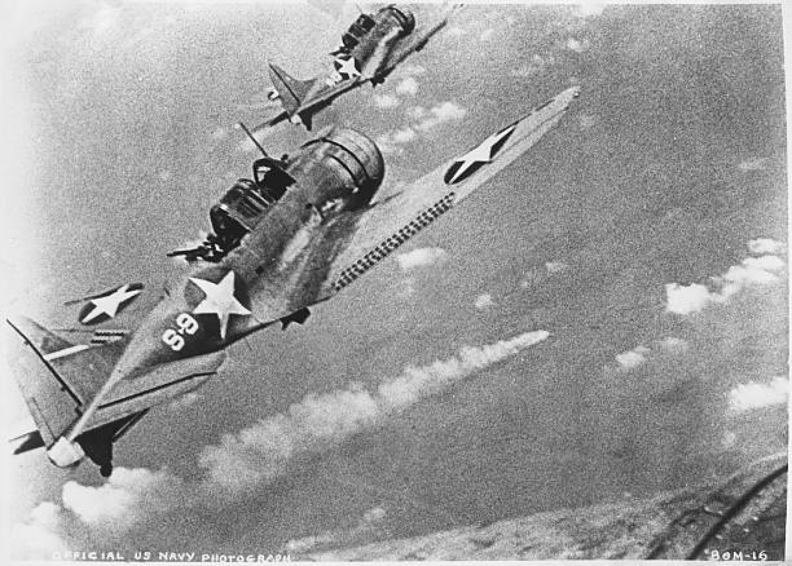
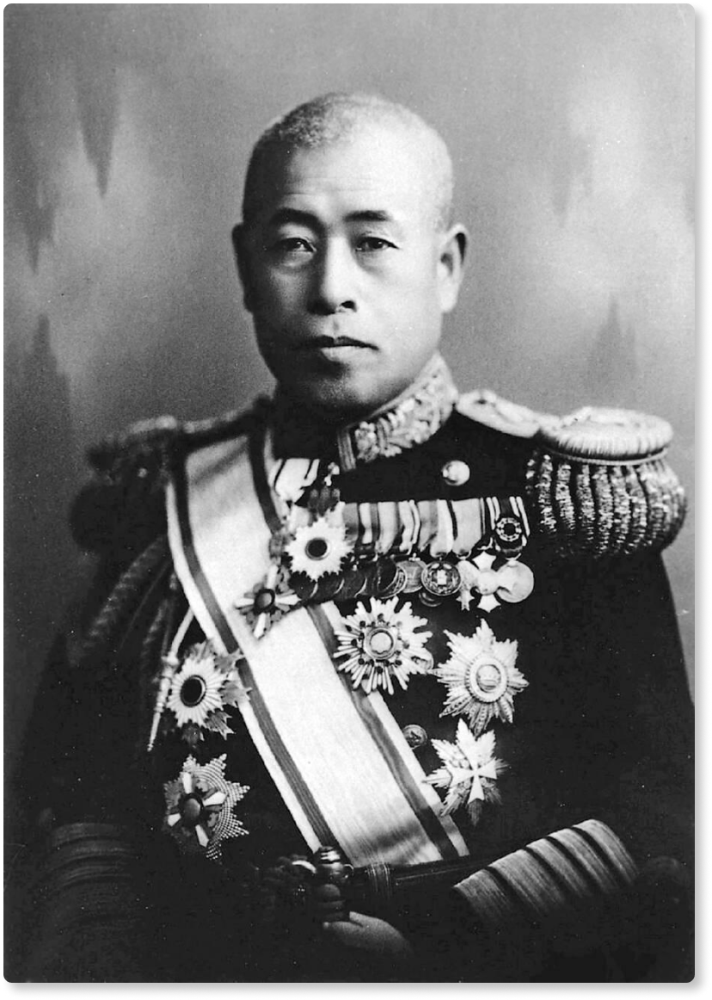
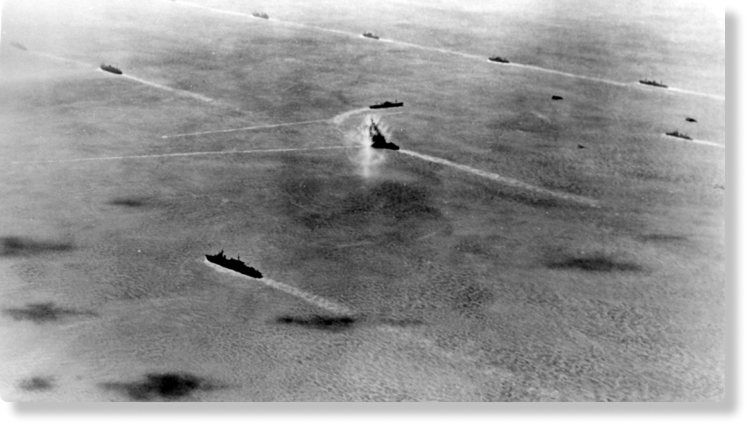
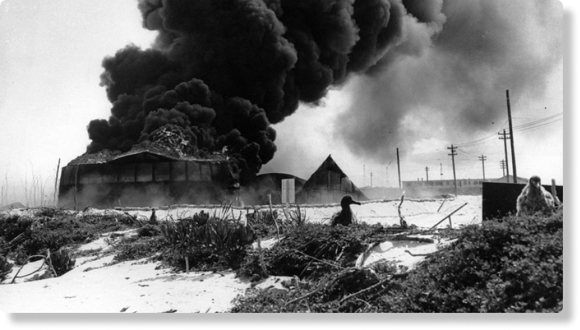
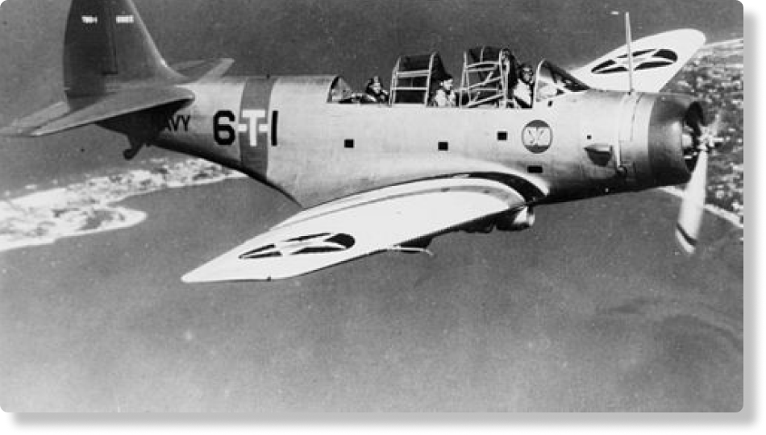
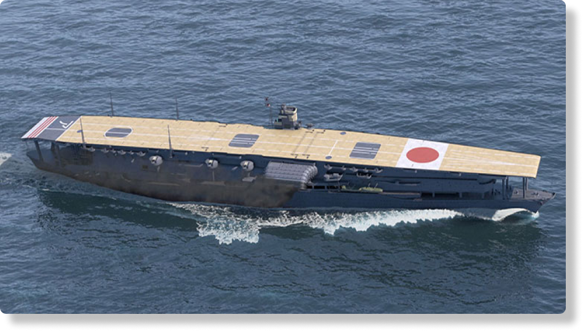
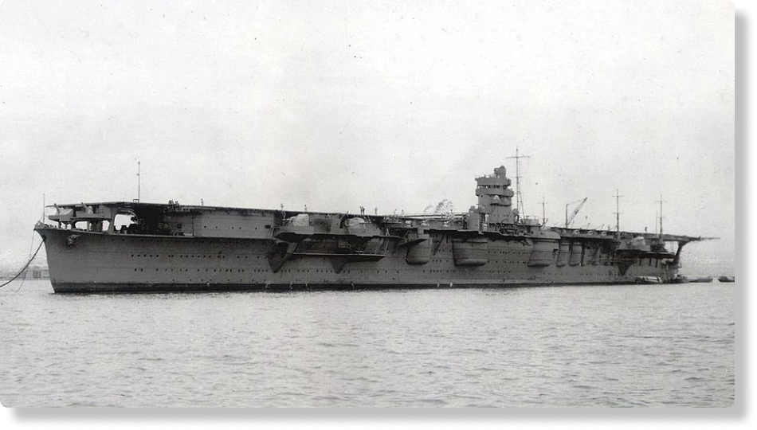
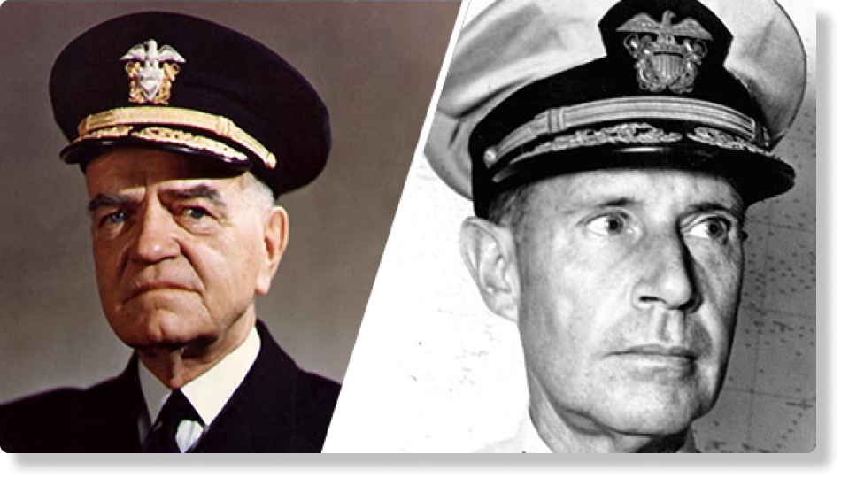
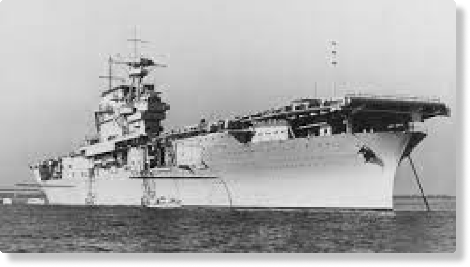

A batalha de midway junto com A campanha das ilhas de salomão são os dois eventos cruciais na Segunda Guerra Mundial, no Pacífico
Bombardeiros de mergulho Douglas SBD-3 Dauntless dos EUA prestes a atacar o cruzador japonês Mikuma
A Marinha japonesa vinha acumulando vitórias desde o ataque surpresa a Pearl Harbor. Mesmo após a batalha do Mar de Coral, a qual não conseguiram completar sua missão de invadir, ainda estavam firmes em prosseguir. Porém tudo mudou em junho de 1942, quando subestimou a capacidade de reação dos Estados Unidos.
O Japão via na ilha de Midway uma oportunidade estratégica para ampliar seu domínio sobre os territórios do leste da Ásia e as ilhas do sudeste do Pacífico. O objetivo era claro: eliminar a Frota do Pacífico dos EUA , considerada o maior obstáculo à sua expansão.
Para isso, os japoneses planejavam destruir os porta-aviões americanos em uma emboscada. O plano envolvia atrair essas forças navais ao atacar Midway, tudo já estava conforme os planos, fazendo os EUA agir como esperavam.
No entanto, o que a marinha japonesa não sabia era que os Estados Unidos estavam um passo à frente: graças a sua decodificação ao código japonês, a qual a estação hypo de criptoanálise, localizada no havai, forneceu um local com codinome AF, na qual iria ser o ataque, para confirmar onde o alvo seria, os EUA enviaram uma mensagem falsa, que informava uma suposta falta de água potável em Midway. Pouco depois, os japoneses mencionando isso em suas comunicações interceptadas, além também de intercepitar a data em que aconteceria o ataque, confirmando o plano. Com essa vantagem, os Estados Unidos prepararam uma emboscada que virou o jogo e mudou o rumo da guerra no Pacífico.
Contexto Rápido: A Batalha de Midway (junho de 1942) foi uma derrota decisiva para o Japão, que perdeu quatro porta-aviões, incluindo um dos responsáveis pelo ataque a Pearl Harbor.
Localização: Sudoeste do Oceano Pacífico, a nordeste da Austrália. Coordenadas: 28° 12′ 27″ N, 177° 21′ 0″ W.
Data(s): 4 de Junho de 1942 – Junho 6 de 1942
Envolvidos: Forças Japonesa e Forças Aliadas
3 porta-aviões
7 cruzadores pesados
1 cruzador rápido
15 contratorpedeiros
360 aeronaves
16 submarinos
1 porta-aviões afundado
1 contratorpedeiro afundado
c. 150 aeronaves abatidas
307 mortos
4 porta-aviões
2 couraçados
6 cruzadores pesados
1 cruzador rápido
14 contratorpedeiros
276 aeronaves
4 porta-aviões afundados
1 cruzador pesado afundado
1 cruzador pesado danificado
248 aeronaves abatidas
3057 mortos
37 capturados
A Batalha de Midway é considerada pelos historiadores como o ponto de virada da Guerra do Pacífico. Apesar disso, a marinha japonesa continuou a combater com intensidade, e ainda levariam vários meses até que os Estados Unidos alcançassem a supremacia naval que possuíram no final do conflito.
Yamamoto Isoroku, comandante da Frota Combinada Japonesa, estava convencido de que um ataque direto aos porta-aviões que conseguiram "escapar" de Pearl Harbor, em razão de que não estavam presentes na ilha, seria um golpe decisivo na guerra, pois presumia que uma guerra prolongada com os Estados unidos os dariam poucas chances de vencer. Em seguida, foi elaborado um plano para atacar a Ilha Midway, local em que os americanos tinham uma base aérea, assim, expandindo o domínio japonês no pacifico. A tática consistia em atrair os porta-aviões americanos para um local, enquanto os americanos achavam que era outro, e provocar uma batalha que seria crucial, com o objetivo de eliminar as forças navais dos Estados Unidos, sem que eles desconfiassem da armadilha. Ao mesmo tempo, a comunicação da marinha japonesa havia aumentado draticamente, refletindo os exercícios navais conduzidos em preparação para as operações de Midway, junto a Força de Ataque de Porta-Aviões, qque eram composta pelos 4 grandes porta-aviões Akagi , Kaga , Soryu e Hiryu com um total de 229 aeronaves. Enquanto isso, os americanos, em desvantagem, tentavam desesperadamente compreender os movimentos japoneses.
No começo de 4 de junho de 1942, os PBYS, aviões de patrulha e reconhecimento dos EUA, atacaram transportes japoneses a noroeste de Midway, tentativa essa de interromper os avanços japoneses. Um dos PBYS atacou e torpedeou o navio-tanque japonês Akebono Maru, causando poucos danos.
Mais tarde naquela manhã, por volta das 06h30m, os japoneses lançaram um ataque em grande escala contra as instalações de Midway, os bombardeiros Aichi D3A(“Val” nome dado pelos aliados), que são bombardeiro de mergulho para bombardear as instalações, os torpedeiros Nakajima B5N ("Kate"), que são torpedos japonês, e caças Mitsubishi A6M Zero ("Zeke"), que possui grande capacidade de combate aéreo, foram os responsáveis pelo bombardeamento.
Entre 09h30m e 10h30m, Os torpedeiros Douglas TBD ("Devastator") dos esquadrões VT-3, VT-6 e VT-8 dos porta-aviões americanos atacaram os porta-aviões japoneses. Apesar de quase todos os torpedeiros terem sido destruídos pelos caças japoneses e pelo fogo antiaéreo, eles atraíram os caças inimigos, deixando os céus abertos para os bombardeiros de mergulho do Enterprise e do Yorktown.
Os bombardeiros "Dauntless" dos esquadrões VB-6 e VS-6 do USS Enterprise atacaram e danificaram gravemente os porta-aviões Kaga e Akagi, enquanto os "Dauntlesses" do VB-3 do USS Yorktown bombardearam e destruíram o porta-aviões Soryu. O submarino americano Nautilus (SS-168) disparou torpedos contra o Kaga em chamas, mas seus torpedos não explodiram.
O Hiryu, o único porta-aviões japonês sobrevivente, respondeu com duas ondas de ataques, ambas as vezes bombardeando o USS Yorktown, deixando-o gravemente danificado, mas ainda flutuando. (Um submarino japonês afundou o Yorktown mais tarde, em 7 de junho.) Na tarde de 4 de junho, um avião de reconhecimento do USS Yorktown localizou o Hiryu, e o Enterprise enviou bombardeiros de mergulho para atacar. Esse ataque deixou o Hiryu em chamas e sem capacidade de lançar aeronaves antes de finalmente afundar.
Três horas e meia depois, os torpedeiros “Kate” do Hiryu desferiram um segundo golpe, forçando o abandono do Yorktown. Em retaliação, os “Dauntlesses” do Enterprise causaram danos fatais ao Hiryu em um ataque por volta das 17h daquela tarde. A destruição da Força de Ataque de Porta-Aviões obrigou o almirante Yamamoto a abandonar seus planos de invasão de Midway, e a frota japonesa começou a se retirar para o oeste.
Em 5 de junho, a TF 16, sob o comando do contra-almirante Spruance, perseguiu a frota japonesa para oeste, enquanto continuavam os trabalhos de resgate do Yorktown, que havia sido danificado. Tanto o Akagi quanto o Hiryu, danificados no dia anterior, foram afundados por contratorpedeiros japoneses no início do dia 5.
Em 6 de junho, bombardeiros de mergulho do USS Enterprise e USS Hornet atacaram e afundaram o cruzador pesado Mikuma, além de danificarem os contratorpedeiros Asashio e Arashio, e o cruzador Mogami. Por ordem de Spruance, emitida após a destruição dos três esquadrões de torpedos em 4 de junho, os Devastators do Enterprise não atacaram devido ao risco de fogo antiaéreo. Após recuperar suas aeronaves, a Força Aérea 16 se retirou, e interceptações confirmaram a retirada das forças japonesas em direção a Saipan.
Ainda em 6 de junho, o submarino japonês I-168 torpedeou o USS Yorktown, interrompendo suas operações de salvamento, e também afundou o contratorpedeiro USS Hammann. Embora os contratorpedeiros de escolta atacassem o I-168 com cargas de profundidade, o submarino escapou. O USS Yorktown afundou na madrugada de 7 de junho.
Dauntless: Modelo de bombardeiro de mergulho utilizado pela Marinha dos EUA durante a Segunda Guerra Mundial, famoso por sua precisão em ataques aéreos.
VB: Esquadrões de bombardeiros e bombardeiros de mergulho da Marinha dos EUA. Cada número representa um esquadrão específico que atuou durante a batalha.
USS Enterprise e USS Yorktown: Porta-aviões dos Estados Unidos.
Kaga, Akagi, Soryu e Hyriu: Porta-aviões japoneses que foram atacados e destruídos durante a batalha.
VT: Esquadrões responsáveis por lançar torpedos contra navios inimigos, voando em linha reta em direção ao alvo.
DevastatorsAviões torpedeiros Douglas TBD usados pelos EUA na Segunda Guerra Mundial, responsáveis por lançar torpedos contra navios inimigos, como na Batalha de Midway.
Fogo antiaéreo: Disparo de armas contra alvos aéreos, geralmente de navios ou terra. Na Batalha de Midway, foi uma grande ameaça aos aviões.
COMINT:COMINT: Inteligência de Comunicações, referente à interceptação de mensagens inimigas, usada para rastrear a retirada japonesa.
Cargas de profundidade: Explosivos lançados para atacar submarinos, como os usados pelos contratorpedeiros dos EUA contra o I-168.
REFERÊNCIAS BIBLIOGRÁFICAS
Fontes:
https://www.history.navy.mil/browse-by-topic/wars-conflicts-and-operations/world-war-ii/1942/midway.html
https://www.britannica.com/story/us-death-toll-during-major-events
https://www.jacar.go.jp/modernjapan/p15.html
https://www.britannica.com/topic/Pacific-War
https://www.nhk.or.jp/archives/sensou/special/warmuseum/03/
https://www.nationalww2museum.org/war/articles/battle-midway
https://pt.wikipedia.org/wiki/Batalha_de_Midway
https://www.deepl.com/pt-BR/translator
google search - tradutor